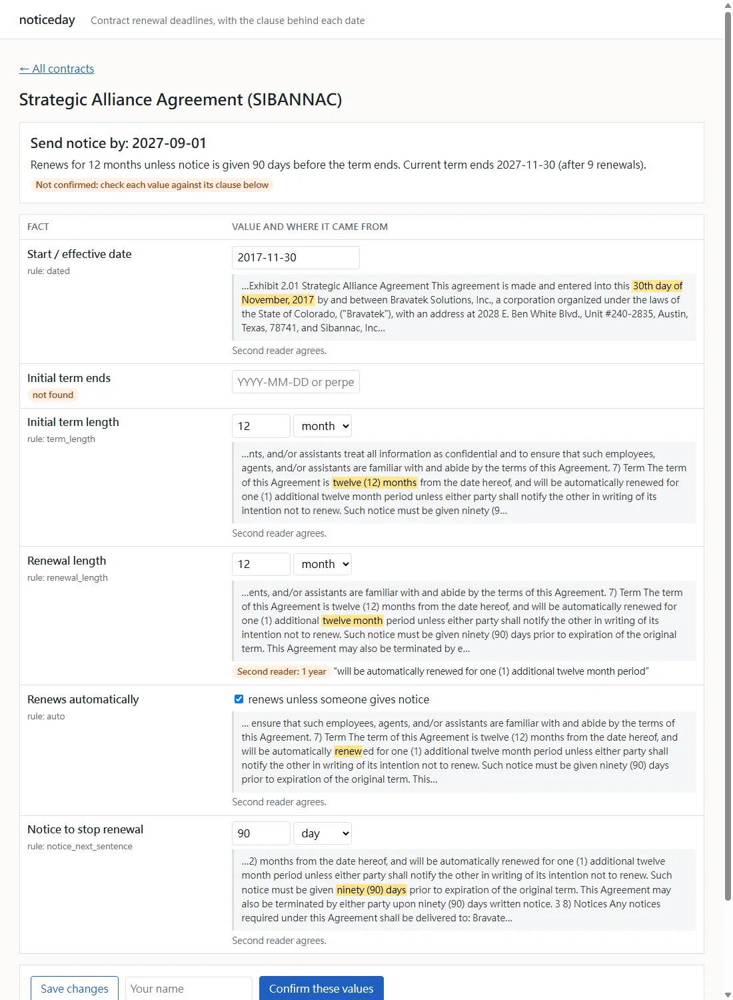

情境
小型企業簽下的垃圾清運、租賃與軟體合約，若沒有及時發出通知就會自動續約。沒有人追蹤通知日，期限一過，企業又被綁住一年。
服務合約會自動續約，除非有人在合約期滿前 30 至 180 天發出通知。noticeday 讀取合約、標出每個日期所依據的條款，而且只在人工確認之後，才把期限放進行事曆。
份律師有記錄通知期的測試合約，規則都讀對了，沒有讀錯，另有 2 次誤報。測試集是來自 SEC 申報文件的 102 份真實合約（CUAD）。
限制：只靠規則時，59 份測試合約中到期日只對 26 份，所以「最晚通知日」只有十分之三是對的。測試集已執行過七次。
開啟儲存庫
小型企業簽下的垃圾清運、租賃與軟體合約，若沒有及時發出通知就會自動續約。沒有人追蹤通知日，期限一過，企業又被綁住一年。
錯的期限比沒有期限更糟。有標註的資料集 CUAD 來自大公司的 SEC 附件，而不是咖啡店的影印機租約，而且測試合約中有載明通知期的本來就不多。
規則讀取起始日、合約期、續約與通知期，每一項都顯示在其來源文字旁。一個可選的本機模型會以第二讀者的身分讀取每份上傳的檔案，而且只有經過確認的期限才會進入行事曆。
13 份測試合約中，通知期有 11 份正確、0 份錯誤、2 次誤報。行事曆檔案只包含已確認的期限，每個都會在 14 天前提醒。
條件限制：一顆 CPU（可選的 4B 模型在 8 執行緒上每份合約約需 46 秒）、不用 API、經律師標註的公開資料（CUAD，CC BY 4.0）、一個含 102 份合約的測試集。
只有當本機模型的引文確實出現在合約中，而且能從那段引文解析回同樣的值時，才會保留模型給的值。在開發集上，這道關卡擋掉了模型自行計算或改寫的值。代價是：有些正確的值也會被擋掉，顯示為「找不到」，交由人工填寫。
針對起始日的改進，讓開發集的正確數從 340 份中的 260 份升到 281 份；但在測試集上，規則反而少讀對了一個到期日。這項進步沒有延續下去，而測試集的錯誤也刻意不去研究，以免測試集左右規則的設計。

需要 Python。第二讀者需要 Qwen3-4B-Instruct-2507 權重和約 8 GB 記憶體。一個 MCP 伺服器讓 Claude 能列出期限；它沒有任何寫入工具，所以確認動作只能在網頁應用程式中進行。
docs/results/test-*.md，由 scripts/evaluate.py --split test 產生，列出每個欄位的原始計數、錯誤值與誤報。
$ uv venv && uv pip install -e . pytest httpx $ pytest -q # 41 tests (4 need '.[mcp]') $ python scripts/seed_demo.py demo.db # needs data/cuad; or upload your own $ NOTICEDAY_DB=demo.db uvicorn noticeday.app:app --port 8830 $ python scripts/prepare_cuad.py $ python scripts/evaluate.py --split test --method rules